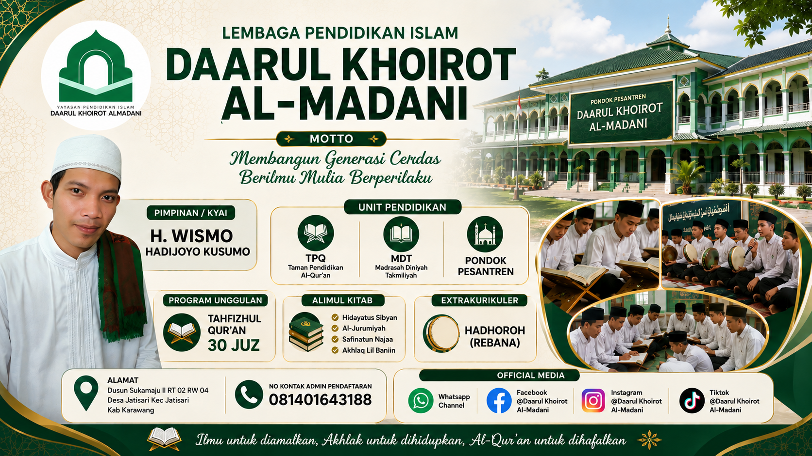
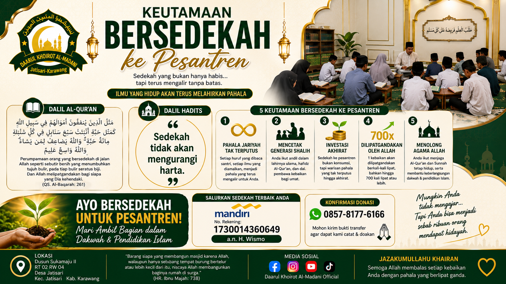

Membentuk Generasi Qur'ani dan Berakhlak Mulia

Lembaga Pendidikan DAARUL KHOIROT ALMADANI adalah pusat pendidikan Islam terpadu yang berdedikasi tinggi dalam membina umat. Kami memadukan nilai-nilai luhur kepesantrenan tradisional dengan manajemen kurikulum pendidikan modern, guna melahirkan generasi santri yang kokoh secara akidah, unggul dalam literasi kitab, dan berakhlak mulia di tengah masyarakat.
Menjadi pusat pendidikan Islam terpadu yang melahirkan generasi Rabbani, unggul dalam hafalan Al-Qur'an, kuat dalam pemahaman ilmu syariat, serta mandiri dan berakhlak mulia.
Eksistensi hukum resmi Yayasan Penyelenggara di bawah naungan Kemenkumham dan Kemenag RI:
| Yayasan | Yayasan Daarul Khoirot Almadani |
| Pimpinan | H. Wismo Hadijoyo KUSUMO (Alumni Pesantren Tahfizh Qur'an dan Darul Hadits Madinatul Ulum Bandung) |
| Akta Notaris | Nomor 3 tanggal 08 Mei 2023 Notaris ABUBAKAR SE, S.H., M.H., M.Kn |
| Kemenkumham | AHU-0007283.AH.01.04.Tahun 2023 |
| NSPP Kemenag | - |
| NSLPQ | 411232159956 |
| Akta Waqaf | WT.3/04/06/10/2022 Diterbitkan PPAIW Kecamatan Jatisari Kabupaten Karawang |
| Alamat | Dusun Sukamaju II RT 02/RW 04, Jatisari, Karawang |

"Setiap huruf Al-Qur'an yang dilantunkan oleh para santri penghafal Quran, mengalirkan pahala abadi yang tiada terputus bagi mereka yang menopangnya..."
Mari berinvestasi untuk akhirat dengan mendukung pendidikan para santri penghafal Al-Qur'an serta pengembangan sarana dakwah di Pondok Pesantren Daarul Khoirot Almadani.